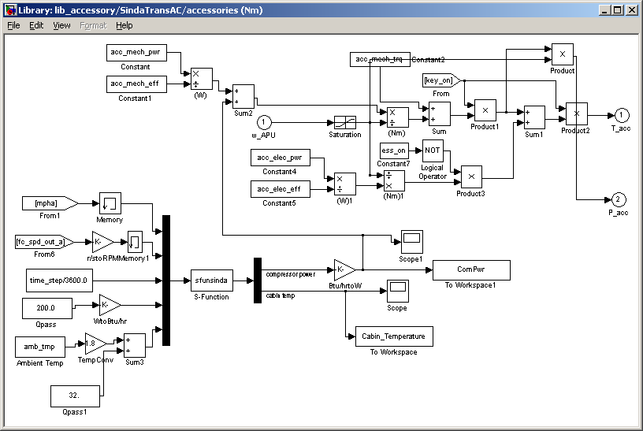

NREL's Vehicle Systems Analysis group is currently developing the ability to perform co-simulations between ADVISOR and Sinda/Fluint to provide in-depth transient modeling of air conditioning (A/C) systems. ADVISOR simulates the vehicle and drivetrain and provides the Sinda/Fluint A/C model with information such as compressor shaft speed and radiator intake air speed. The Sinda/Fluint model determines the loading on the engine shaft as well as a prediction of cabin cooling.
The ability to perform a co-simulation between Sinda/Fluint and ADVISOR has been demonstrated at the lab (see Reference 1 below). The s-function to call Sinda/Fluint has been integrated into ADVISOR for the initial public release of ADVISOR version 2002. A Sinda/Fluint transient A/C model is planned for inclusion in a future ADVISOR release.
Users familiar with Sinda/Fluint who wish to integrate their own Sinda/Fluint models with ADVISOR can experiment with this functionality now by using the included auxiliary load block (lib_accessory/SindaTransAC) or creating their own auxiliary load block (similar to lib_accessory/SindaTransAC--see here for details).
At the vehicle input screen, the user should select 'Sinda' for their accessory model version. (The type is automatically 'Sinda' as well). A popup menu will appear and ask if you have the proper setup to run a Sinda/Fluint co-simulation. At the vary least you will require a properly licensed Sinda/Fluint code. You will also need a Sinda/Fluint model to run in the form of a *.sin function.
| Figure 1. SindaTransAC model in lib_accessory.mdl Note the s-function (sfunsinda.m located in <ADVISOR main directory>/models/Sindafluint) that passes variables back and forth between ADVISOR and Sinda/Fluint. Users interested in integrating their own Sinda/Fluint models in a co-simulation should reference this library block and the sfunsinda.m s-function. |
|  |
Created: 29-April-2002 [mpo]
Last Modified: NA